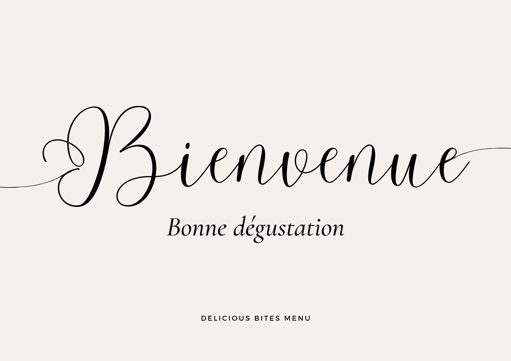

Delicious Bites Menu
Bienvenue chez nous et bonne dégustation!!

Appetizers
-
Salade Caprese:
Tomates fraîches, mozzarella et basilic arrosés d'un glaçage
balsamique.
-
Bruschetta:
Pain grillé garni de tomates hachées, ail et basilic frais.
-
Gougères:
Petits choux au fromage servis chauds.
-
Mozzarella pannée:
Boulettes de mozzarella fondantes, enrobées d'une panure
croustillante.
-
Soupe à l'oignon :
Soupe traditionnelle française garnie de croûtons et de fromage
fondu.
Main Courses
-
Saumon grillé:
Filet de saumon assaisonné et grillé à la perfection, servi avec une
sauce au beurre citronné.
-
Poulet au citron:
Blanc de poulet mariné, rôti et servi avec des légumes de saison.
-
Pâtes Primavera:
Pâtes fraîches avec des légumes de saison et une sauce légère à
l'ail.
-
Escalope Calabrese:
Pâtes fraiches, cèpes, jambon d'Italie, aubergine, gratinée au
fromage.
-
Pizza Napolitana :
Tomate, mozzarella,câpres, olives, Thon.
Desserts
-
Fondue au chocolat:
Assortiment de fruits et de guimauves servis avec une riche fondue
au chocolat.
-
Tarte Tatin:
Tarte aux pommes caramélisées servie tiède avec de la crème fraîche.
-
Mousse au chocolat:
Mousse légère et aérienne au chocolat noir, garnie de crème
fouettée.
-
Café chocolat liégeois:
Café pur arabica ou chocolat, chocolat chaud et chantilly.
-
Tiramisu:
Couches de biscuits imbibés de café, de mascarpone crémeux et de
cacao saupoudré.